Eight years owning end-to-end product domains across enterprise platforms, design systems, and zero-to-one product. Currently designing Eliza, BNY's AI platform on Claude. My workflow is Claude → code. I don't touch Figma.
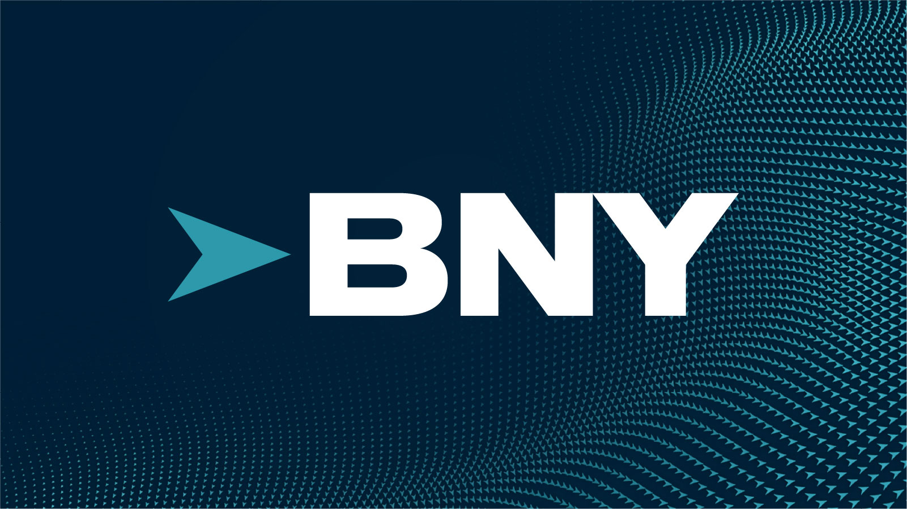
Lead designer on Eliza, BNY's AI platform built on Claude. Owned the global navigation, the Digital Employee Marketplace, light mode (shipped in 3 days), and an automated design audit tool that screenshots inconsistencies and files them as issues.
Built force-multiplier tooling alongside the design work. Ran independent research via an agent I built to synthesize user interviews. Workflow is Claude → code, no Figma.
Taxonomy, 1,500+ icons, AI-in-the-loop documentation pipeline, governance framework. Three brands with no shared language before this.
Built the documentation pipeline that hit 120x writing-effort reduction and shipped 60+ component docs on schedule.
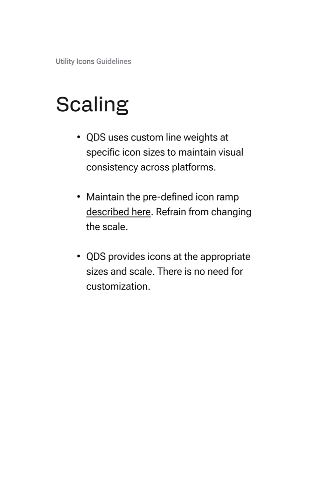
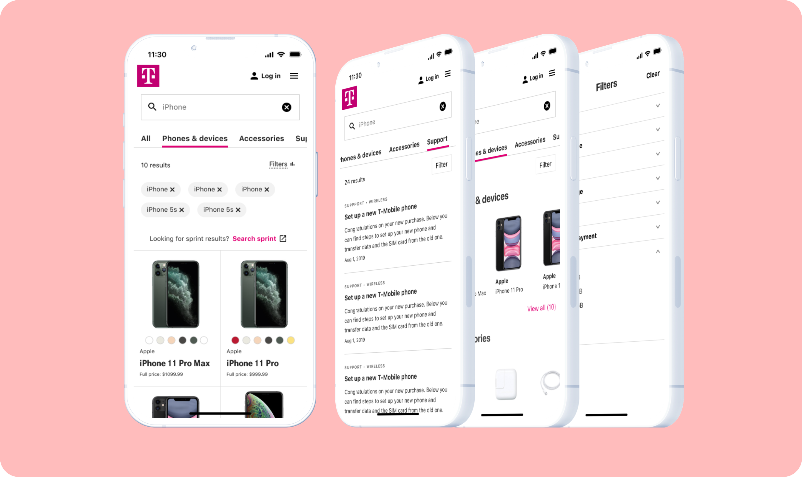
105% engagement increase. 94% null results decrease. 661% buying intention increase. Plus leading navigation across the entire ecosystem.
Dropped into a mid-flight project with a PM who didn't yet value design thinking. Advocated for users, delivered impact, led research initiatives across in-house teams and third-party vendors.
Founding designer and COO. Brand, product, design system, community. 0 to 100K+ members. $3.4M managed. Team scaled 3 to 25.
Designed with extreme constraints, built for community, cultivated dev relationships that compounded design velocity. Survived four major app versions.
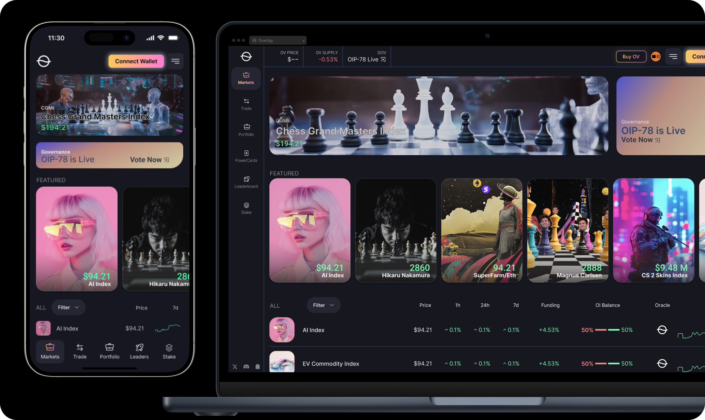
An AI tool that turns a set of hand-drawn architectural sketches (plans, elevations, sections, perspectives, parti) into one multi-storey IFC BIM model openable in Revit or ArchiCAD. Multi-image vision reconciliation in a single Claude call, structured output, IFC geometry generated programmatically. Solo design and build. In alpha with an architect.
Self-hosted PWA for tracking newborn and toddler activity across caregivers. Feeds, sleep, handoffs. Solo design and build on Node, Express, SQLite, behind a Cloudflare Tunnel on a Mac mini. Runs daily in my own home.
Owned entire product domains, not just shipped features within them. BNY Eliza nav and Digital Employee Marketplace. Qualcomm content, icons, and architecture. Overlay from zero.
Data models, permissions, integration surfaces. Architecture-trained. The DE Marketplace taxonomy (Role → Capability → Process → Agent → Tasks) is a data model. T-Mobile nav was the unifying layer for 40M+ users.
Started from a problem, not a spec. Overlay DeFi (0 → 100K+). BNY's Digital Employee Marketplace. sketch-to-revit. Iona Tracker. I build when nobody's asked me to.
Claude → code, no Figma. Built an AI documentation pipeline at Qualcomm (120x writing-effort reduction). Built an automated design audit tool at BNY. AI is how I ship.
No research handoffs. At BNY, ran 1-on-1 user interviews and fed transcripts through an agent I built to synthesize findings. At T-Mobile, briefed in-house research and third-party vendors directly.
I build tools that make the team faster. The AI doc pipeline at Qualcomm. The automated design audit tool at BNY. The component library at Overlay. Output compounds.
"Overlay wouldn't be where it is today without the work we've done with Wesley. What sets him apart is his ability to see the bigger picture, understanding our business goals and ensuring the designs align with our overall objectives."Lan Wolfer · CEO, Overlay Foundation
"The quality of his work has been top notch, and his fast turnaround times have kept us ahead in a fast-paced industry. Wesley handled everything with what felt like ease, from design strategy and UX to marketing and branding."Josh Mackanic · CEO & Co-Founder, CivilGrid
"Wesley is a holistic and critical thinker. It was a joy to collaborate with him on intricate design challenges."Irene Barber · Design Director, Blink UX
I've led product design at startups and a Fortune 500. Before UX I studied architecture. That's where the systems thinking comes from, even if I never practiced.
Dad, husband, Pacific Northwest. Two kids (one new this year). Outside as much as the weather allows.
When I was 13 I saved a girl from falling off a galloping horse by riding up beside her and pushing her back up. Probably has nothing to do with design. Felt worth mentioning.
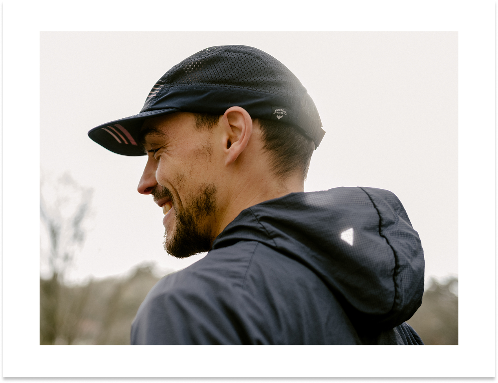
Done at hour 4 beats perfect at week 4.
Claude → code. Prototypes in minutes. Docs in hours. Tools that compound.
Judgment on where to spend the polish budget.
Patterns that compound across products beat one-off features.
Not the ticket. Not the spec. The actual problem.
I run my own interviews and synthesize my own findings.
Open to senior and staff product design roles. AI-forward teams especially.
BNY is building Eliza, an internal AI platform built on Claude where "digital employees" are recruited, monitored, and governed like human talent. I lead design across navigation, the marketplace, dashboards, personalization, and the design system that has to feed AI agents instead of human designers.
Eliza sits under BNY's AI umbrella. Underneath the umbrella: chat (the AI assistant), a Digital Employee marketplace (where AI agents live), an initiative intake system (how new AI projects get started), and governance tools. When I joined, these areas had grown fast but the UX hadn't kept up. Multiple product areas were siloed under inconsistent navigation. Users couldn't find what they needed. Leadership couldn't see across the platform.
My job was to make it cohesive while shipping on aggressive timelines through a complex stakeholder landscape.
The existing Eliza platform used a workbench-style top navigation that couldn't scale. As BNY added more AI products (governance tools, performance dashboards, compliance workflows), the top nav was running out of room and users were getting lost.
I proposed a hierarchical IA with four top-level areas (Eliza, Governance, Performance, Compliance) unified under a left-nav with a hub landing page at AI.bny. Significant structural change. The team needed something transformational enough to solve real problems and shippable enough to launch in March.
I ran independent user research alongside the design work. Interviewed Eliza users 1-on-1 about what they needed. Fed transcripts through an agent I built to synthesize findings. Designed off the synthesis. No research process was handed to me. I built the loop.
We launched the navigation redesign, marketplace redesign, chat history, and new landing page together. A coordinated release that changed how BNY's employees experience AI at the company.
BNY's digital employees are AI agents that handle specific tasks (transaction repair, document processing, compliance checks). Each has capabilities, performance metrics, and a lifecycle (pipeline → pilot → active → retired). The marketplace is where these agents live.
I owned the UX end-to-end. Defined the data model (Role → Capability → Process → Agent instance → Tasks), the filtering and integration surfaces across Practices/Platforms/Hubs, and three deployment pathways (net-new, clone-and-modify, scale existing). These patterns now compound across every downstream agent-creation flow.
I also designed the manager dashboard with cross-platform capability views, so a manager could see all the DEs they're responsible for across different systems. Health status uses a red/amber/green system based on accuracy thresholds. If an agent drops below 94% accuracy, it triggers a warning.
The team had 1,100+ hard-coded color references across 138 files in the monorepo, with dark/light tokens partially built but no working switching mechanism. Direct color inversion didn't achieve the desired aesthetic. The product had launched in light mode anyway, with quality that nobody was happy with.
I built a new V3 in light mode with a Claude → code workflow. Token-only consumption from the new design system, A11Y-compliant palette explorations (slate, frost, pewter, steel), direct foundation-layer token mirroring for dark to light conversion. Working prototype in three days.
Alongside it I built an automated design audit tool that screenshots inconsistencies across the system and files them as issue-tracker entries. The team gets faster QA without doing the QA. That tool keeps paying back.
Before paternity leave I shaped the strategy for an AI-consumable design system that becomes the foundation every product area inherits. The concrete moves:
A colleague carried the specific multi-layer architecture and component-contract implementation across the finish line during my paternity leave. The strategic shape was set beforehand.
The biggest single impact I've had at BNY might not be any specific screen. It's how design feedback happens.
My workflow is Claude → code. I no longer touch Figma. Time goes to collecting context, then iterating, testing, and shipping. On one occasion I delivered five prototype iterations in a single session: record a walkthrough with stakeholders, process notes in 10 minutes, iterate in 2 hours total. Compare that to the previous cycle of Figma mockup → review meeting → comments → revision → another meeting → handoff spec. Weeks compressed to hours.
The team is several months ahead of peer design groups on AI tool adoption. I also pushed for recording all product team meetings and advocated for user-testing data backing design decisions in leadership demos, rather than just showing mockups and hoping for buy-in.
The hardest problem wasn't the UI. It was defining what "managing AI" means for a bank that's older than the country. I shaped the conceptual framework that the team designs within: agent lifecycle, governance integration, observability, platform IA. I also built force-multiplier tooling alongside the design work, because the highest-leverage thing a staff designer can do is make the rest of the team faster.
Qualcomm had no unified design system. Three brands (Qualcomm, Snapdragon, Dragonwing), dozens of product teams, zero shared language. I led content strategy, iconography, documentation architecture, defined the system's taxonomy, and ran original research to define the UX patterns the system would ship.
Before you can build a design system, you need a shared language for what things are. I defined the taxonomy that became QDS's organizing principle: Atoms → Molecules → Organisms → Templates → UX Flows → Design Patterns.
This wasn't an atomic-design rehash. The addition of UX Flows and Design Patterns as explicit levels acknowledged that Qualcomm's products needed more than component specs. They needed guidance on how components compose into real user experiences. A button is an atom. A search bar is a molecule. "How filtering works across all Qualcomm products" is a pattern and deserved its own place in the hierarchy.
This taxonomy informed everything downstream: how the documentation was structured, how engineering understood the relationships between parts of the system, and how the team talked about what they were building.
The math problem: 60+ components that needed full documentation. Manually, that's maybe 12 components in the time we had. The system would launch half-empty.
I built an AI-in-the-loop documentation pipeline using Claude. The workflow: I created a structured input format that captured a component's props, variants, states, and design intent. Fed that into Claude with carefully engineered prompts. Claude generated a first draft. Human designers reviewed, refined, approved. CMS pages were created from the output.
Result: 120x reduction in writing effort, 95% reduction in CMS page creation time, 60+ components documented on schedule. The system launched complete instead of half-built.
Qualcomm had icons scattered across teams with no standards, no naming conventions, and no process for adding new ones. Marketing used one set. Product used another.
I owned the icon library from audit to ship. Cataloged every existing icon across both marketing and product design. Established sizing standards and naming conventions. Built a metadata schema so icons could be searchable and filterable. Created a governance workflow for custom icon submissions. Shipped v1 with 1,500+ utility and marketing icons unified across all three brands.
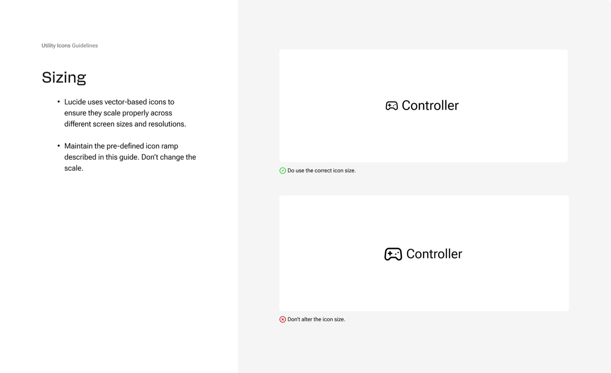
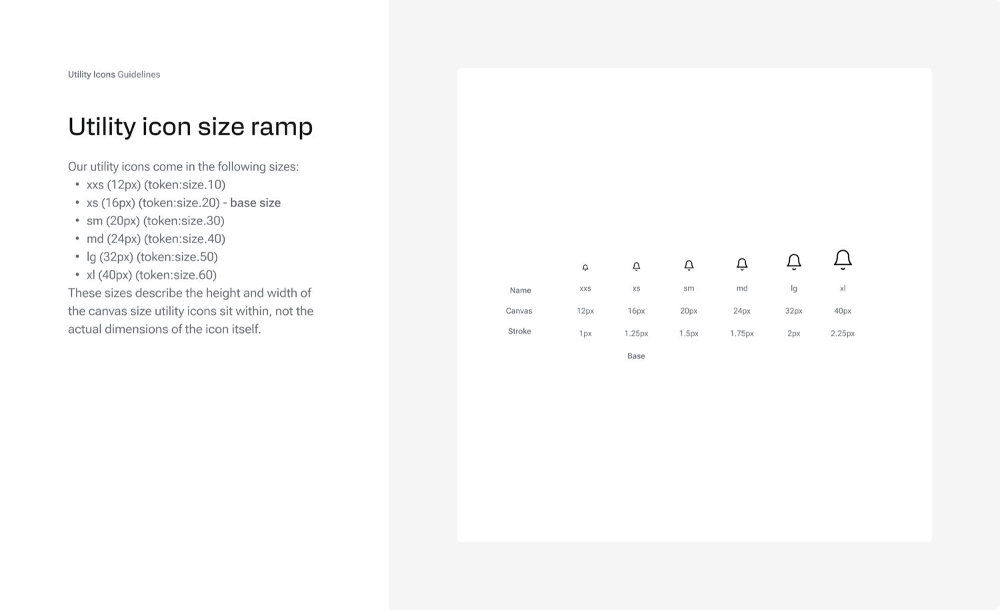
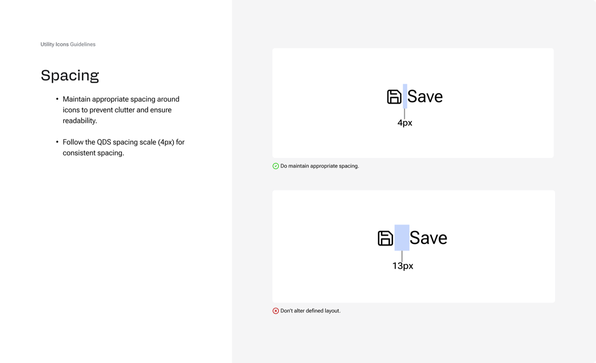
A design system is only as useful as its documentation site. I designed the complete information architecture: sitemap, content structure, navigation, and page templates. Evaluated CMS options (including Knapsack) before the team decided to build a custom storefront, which I collaborated with engineering to implement.
Each component page followed a consistent template: overview, usage guidelines, variants, states, accessibility, code reference. This consistency meant that once you learned how to read one component page, you could read them all.
QDS didn't have an answer to the question "what counts as a UX pattern, and which ones belong in this system." Without that answer, every team picks their own definition and the system fragments before it ships. I owned the work to define both.
Original research. Interviewed three staff designers and a Head of Design to surface what they were already calling patterns, where they disagreed, and which behaviors caused the most rework. Benchmarked peer documentation systems (Carbon, Material, Polaris, Atlassian) to understand how the industry was framing the problem. Synthesized into a working definition and a candidate taxonomy.
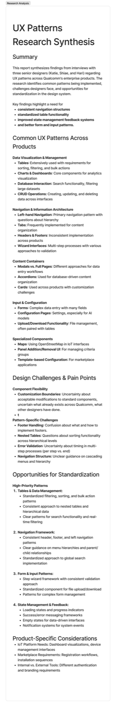
Tested the taxonomy across current QC products and the shape of what was coming next. Navigation was the highest-leverage cluster — Top Nav, Side Nav, Browser Nav, Local Nav, Marketing Nav each had different rules, different states, different audiences. I deconstructed real product surfaces and mapped them against the proposed taxonomy to validate it survived contact with the actual portfolio.
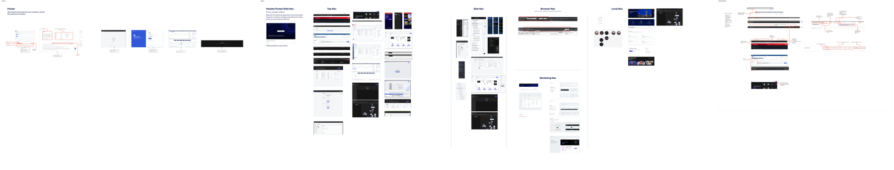
Patterns aren't just happy paths. Each pattern got state coverage: forms documented by layout and validation state, tables documented across empty / loading / unauthorized / vague-input states. State coverage is what makes a pattern usable for product teams who would otherwise reinvent the same broken edges.
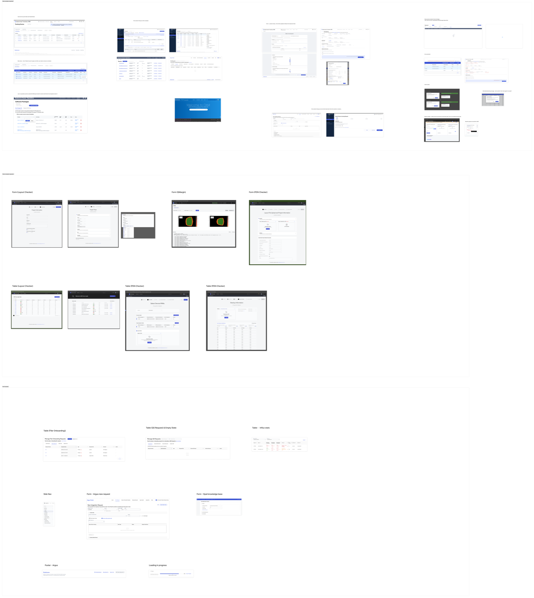
Then I presented to the Heads of Design to get buy-in on the definition and the taxonomy. Patterns work doesn't matter until leadership agrees that's how the org is going to talk about patterns going forward. That alignment is what made the pattern library roadmap real instead of a side artifact.
A system without governance is a library that slowly rots. I established review workflows, contribution processes, and quality standards that let distributed teams across multiple time zones and business units contribute without the system losing coherence.
Two pillars of staff-level systems work. First: AI as a first-class tool in DS operations (defined the input format, wrote the prompts, set up the review loop, trained the team) so the system could ship complete instead of half-built. Second: original research and taxonomy work that defined the abstraction layer the whole team designed inside of — and the stakeholder management to get Heads of Design to agree on it before it shipped.
As a UX Lead on T-Mobile's Design System team, I was tasked with redesigning the search experience across all of T-Mobile's properties. I was also the lead designer for Navigation, building a framework used by 40M+ monthly active users, and contributed scalable components to the design system serving 40+ designers.
I got dropped into the middle of this project, so typical discovery and exploration was out. As the only designer on a team of three leading this initiative, partnered with a PM who had not yet fully come to appreciate the benefits of design thinking, advocating for design thinking without delaying the project was a tool I quickly deployed and sharpened.
I aligned on four business and user objectives:
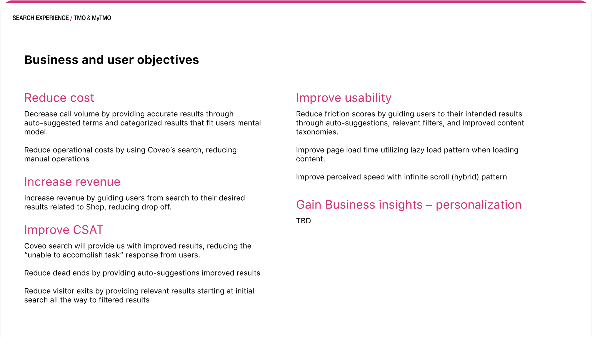
To maintain project deadlines while balancing user needs, I led research initiatives end-to-end: defined the research questions, briefed the in-house research team and third-party vendors on methodology, and translated findings into product direction.
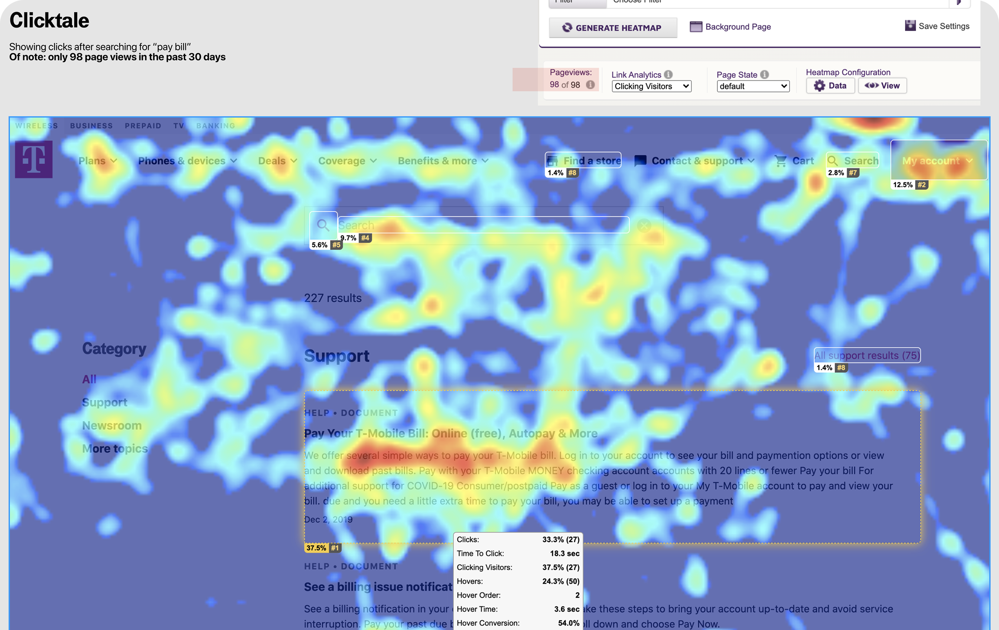
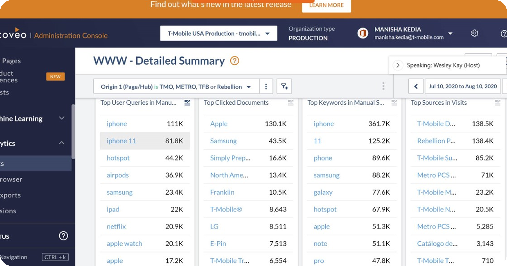
I conducted competitive and comparative analysis across Verizon, Google, REI, Amazon, Home Depot, and Dell, drawing insights from industry leaders to balance innovation with established patterns.
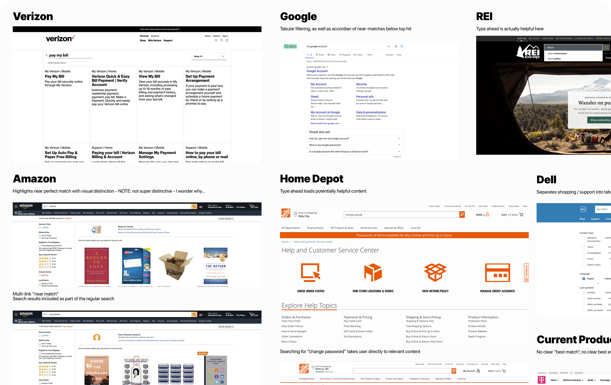
I developed design concepts addressing user needs within technical constraints, iterating rapidly based on stakeholder feedback. Five major iterations:
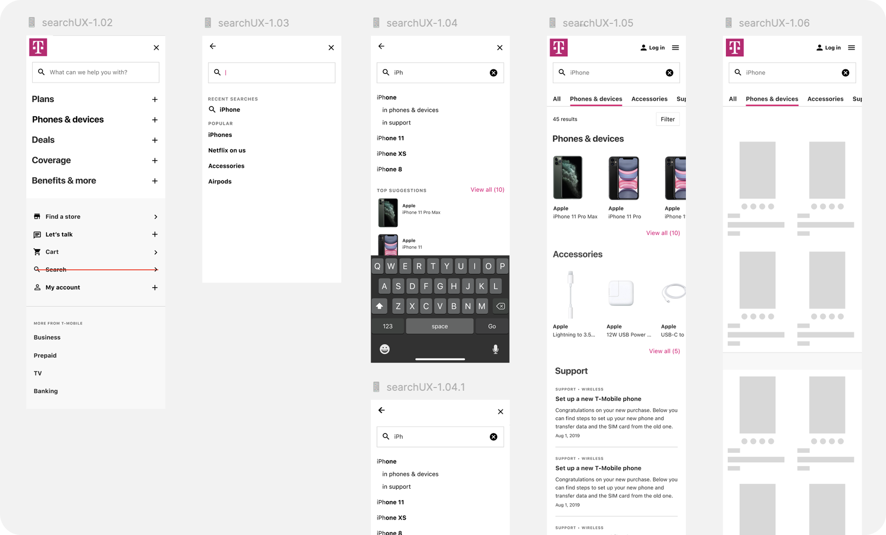
Implemented A/B testing to validate design decisions before full deployment. Continuously monitored key metrics through Coveo's administration console. The numbers: 94% null result reduction, 105% engagement increase, 661% buying intention increase.
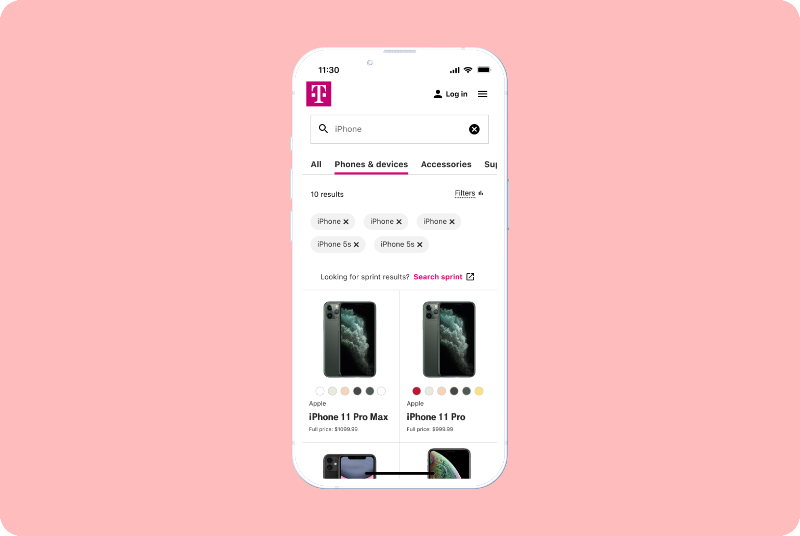
Within a short period and with a high-visibility feature at stake:
The metrics are strong, but the real story is what happened around them. I was the only designer, dropped mid-project, working with a PM who didn't yet value design thinking. I advocated for users when others were focused on the business. I delivered impact in a compressed timeline in a complex organization. That's the same muscle senior product design requires across any ecosystem: influence without authority, data-informed craft, and the judgment to know when good enough is done.
Founding Designer and COO. Led the development of Overlay, a decentralized exchange for niche data markets. Built everything from zero: brand, product, design system, community, team.
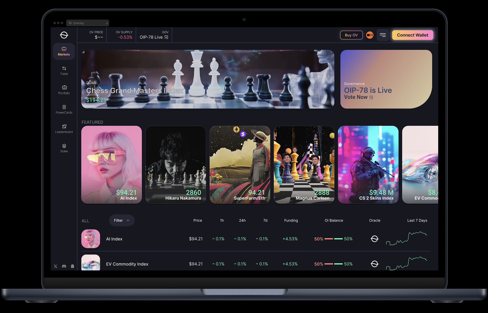
I leaned on qualitative user research, precedent analysis, collaborative team decisions, and my own instincts when making design decisions.
Over three years I started multiple "Core User" groups, soliciting direct feedback from community members. This wasn't formal UXR. It was embedded, ongoing, community-native research. I was in Telegram chats daily, talking to users, watching how they interacted with the product, and using that signal to inform design decisions.
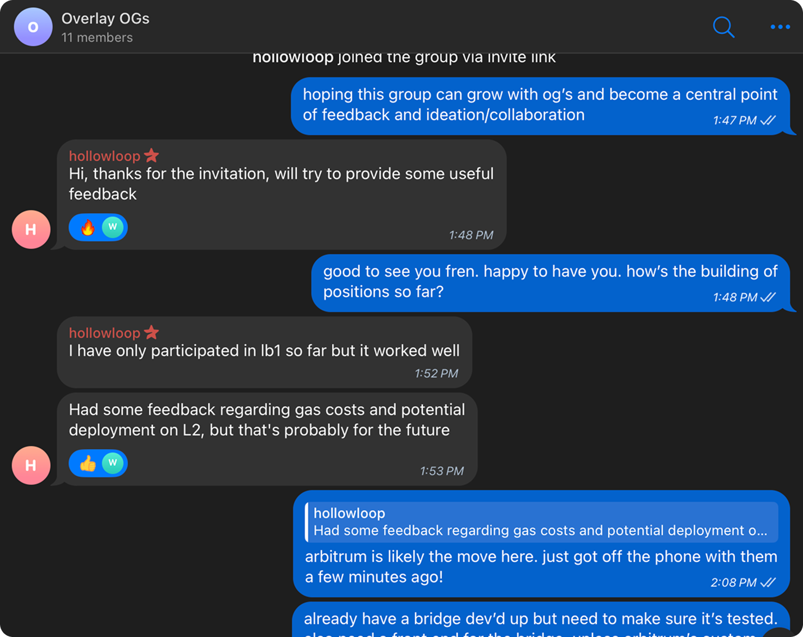
Early on I developed a Design Strategy document, a "Design Ethos" that balanced Overlay's highly technical nature with a playful, meme-driven brand identity.
The core question: how do you design a protocol that's supposed to handle everything? In creation, if you design for everything, nothing has significance. The spectrum of possibilities is too great.
The answer: Cats.
Our team had a deep appreciation of scientific rigor, mathematical dexterity, and the absurd. Few things are as beautifully absurd as cats and our social infatuation with them. They're obsessive, they're the second most successful hunters in the animal kingdom, they're cool, fuzzy, and turned out to be an aesthetic we liked.
What does a cat do if it doesn't like something on the shelf? It knocks it off. This philosophy ("scientists and cats") became the foundation for all marketing, communication, and product personality.
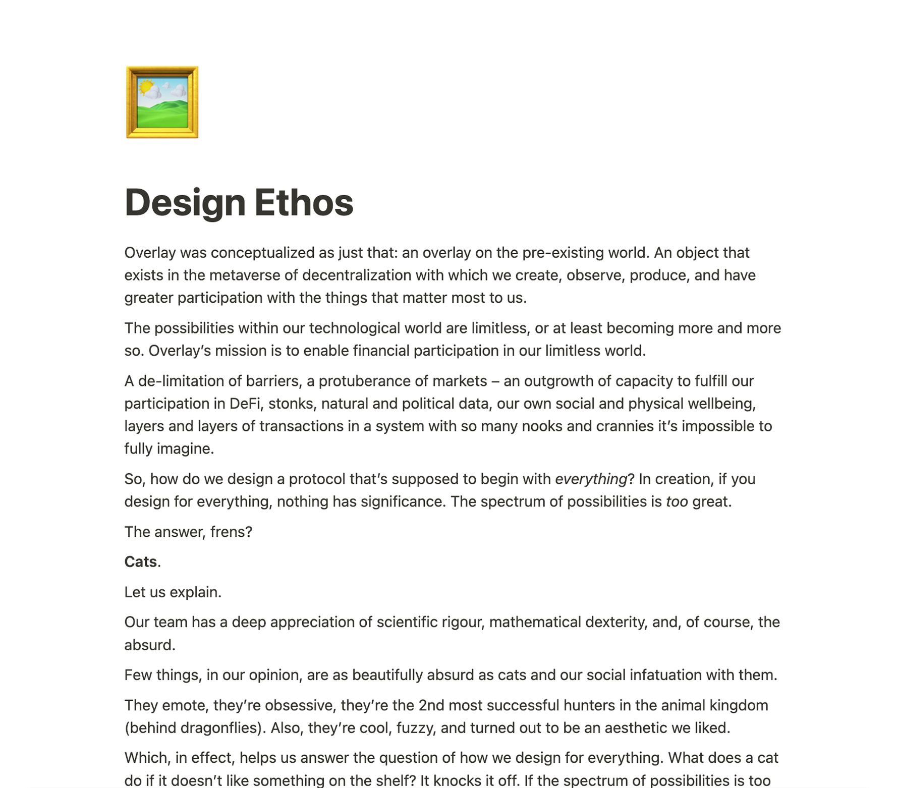
I collaborated closely with dev on all new features. When the team was small, I cultivated a relationship with our front-end lead that allowed us to move extremely fast without formal documentation.
I built a component library on the fly: buttons, tabs, spacing, dropdowns, headers, market elements, cards, pop-ups, radio buttons. Notes for devs were embedded directly in the library rather than separate spec documents.
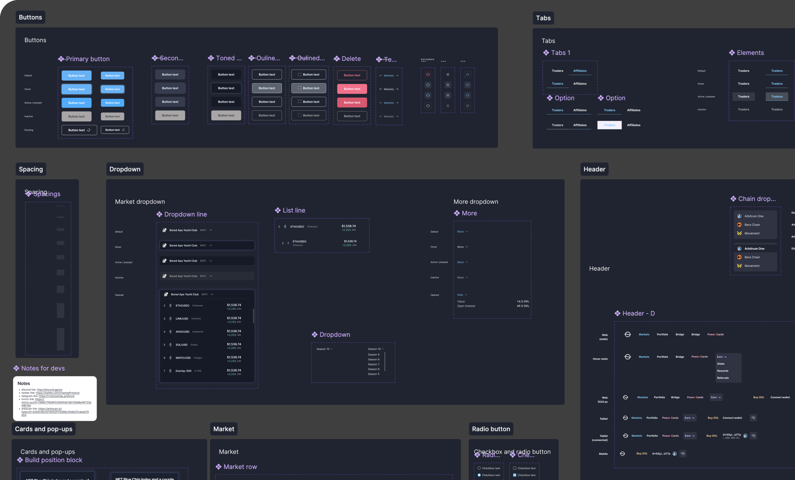
Four major app versions, each responding to real market feedback:
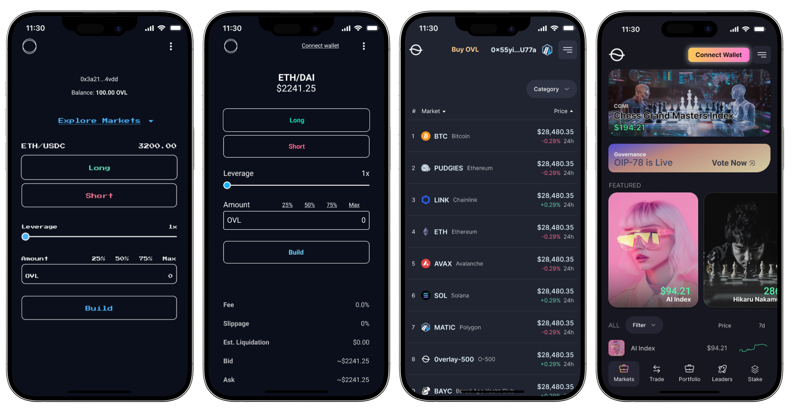
I engaged a brand design agency to move Overlay from the initial phase to a brand with greater gravitas. We started simple and mathematical. We progressed into nuanced and fluid. The pixel art cat became a samurai cat.
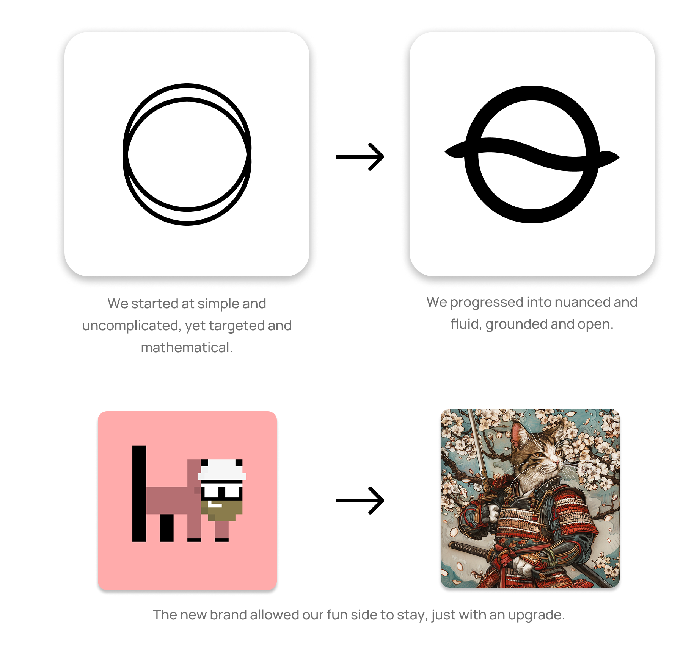
Gamification was a significant advantage. I designed the NFT cards and the app functionality and was responsible for the tokenomics behind the powers the NFTs gave holders. Worked with dev to ensure the gamified nature worked within the system's technical constraints.
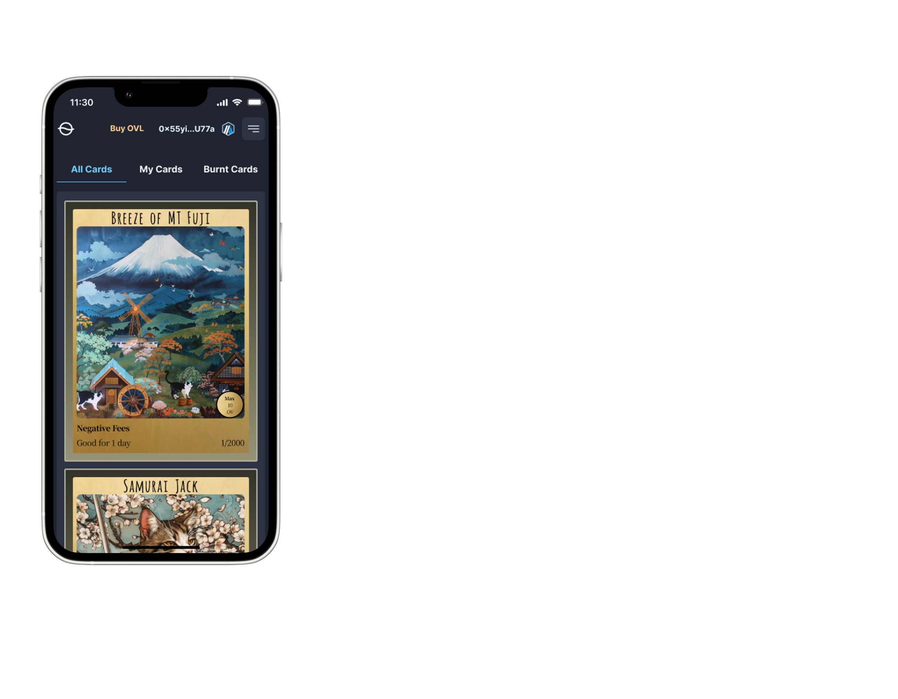
To onboard the next 10,000 members, we built an ambitious referral program for all user types. Significant upfront effort to understand referential logic and prevent Sybil attacks. Heavy collaboration with dev and product strategy.
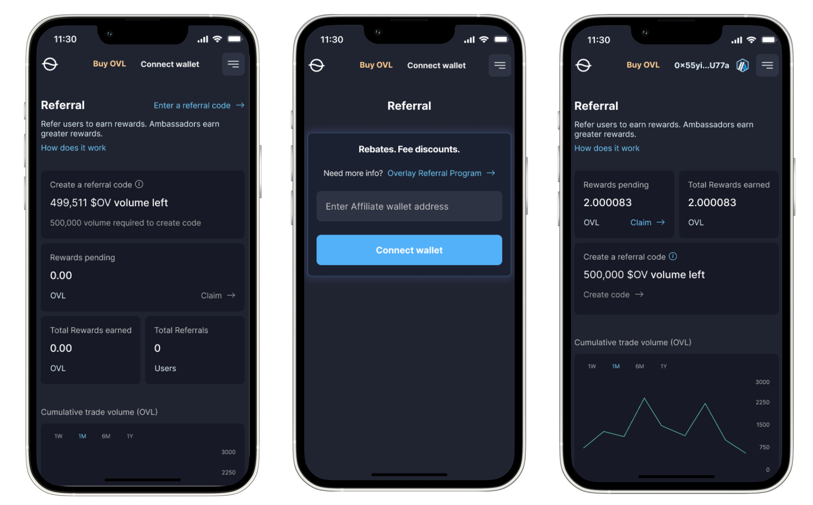
Founding a company teaches you to design with extreme constraints, make irreversible decisions with incomplete information, and build for a community, not just users. The "scientists and cats" philosophy demonstrated that technical products can have personality. The developer collaboration muscle is directly transferable to any product team that wants to ship faster.